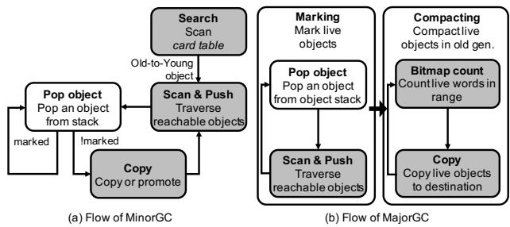
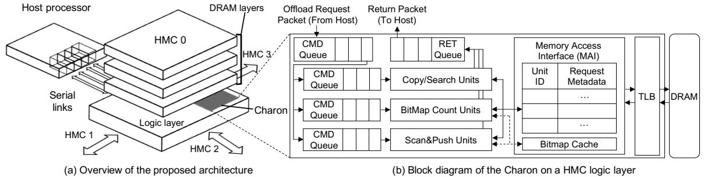

Charon: Specialized Near-Memory Processing Architecture for Clearing Dead Objects in Memory 图表详解¶
Figure 1: Overview of ParallelScavenge GC in HotSpot¶

- 图片展示了 HotSpot JVM 中 ParallelScavenge GC 的工作流程概览，聚焦于对象在不同代（Generation）之间的移动与回收。
- 整个流程分为四个主要阶段，分别用数字 1 至 4 标注：
- 1. Traverse（遍历）: 从 Root Set 出发，遍历 Eden 区域中的对象图，识别所有可达的 Live Object（白色圆圈），并标记不可达的 Dead Object（灰色圆圈）。
- 2. Copying（复制）: 将 Eden 和 Survivor-From 空间中的 Live Object 复制到空闲的 Survivor-To 空间。此过程同时清理原空间。
- 3. Promotion（晋升）: 对于在 Young Generation 中存活超过一定次数的对象，将其晋升至 Old Generation。
- 4. Compaction（压缩）: 在 MajorGC 阶段，对 Old Generation 进行压缩，将所有 Live Object 移动到连续内存区域，消除碎片。
- 图中使用箭头区分两种操作：
- 实线箭头表示 Referencing Live object，即对象间的引用关系。
- 虚线箭头表示 Moving Dead object，即垃圾对象被清除或移动的过程。
- 内存区域划分清晰：
- Young Generation 包含 Eden、Survivor-From 和 Survivor-To 三个子区域。
- Old Generation 位于下方，用于存放长期存活的对象。
- 此图直观体现了 Generational Hypothesis：大多数对象生命周期短，仅少量对象长期存活，因此通过分代收集可提升效率。
- 该流程是论文中分析 GC 开销的基础，后续章节基于此分解出 Copy、Scan&Push、Search 等关键原语进行硬件加速。
Figure 2: GC overhead normalized to mutator time (for useful work) in big data processing workloads over varying heap size¶

- 图表标题为 Figure 2，展示的是在不同堆内存配置下，GC overhead 相对于 mutator time（即有用工作时间）的归一化比例。
- 横轴分为两组：Spark 和 GraphChi，每组包含多个具体工作负载：
- Spark：BS（Naive Bayes）、KM（K-Means）、LR（Logistic Regression）
- GraphChi：CC（Connected Components）、PR（PageRank）、ALS（Alternating Least Squares）
- 最右侧为 Geomean，表示几何平均值
- 纵轴为 GC Time over Mutator，范围从 0 到 1.5，表示 GC 时间占 mutator 时间的比例。
- 图例说明四种堆内存配置：
- Overprovision (100%)：堆内存为最小需求的 2 倍
- Overprovision (50%)：堆内存为最小需求的 1.5 倍
- Overprovision (25%)：堆内存为最小需求的 1.25 倍
- No Overprovision：堆内存刚好满足最小需求，无冗余
| 工作负载 | No Overprovision | Overprovision (25%) | Overprovision (50%) | Overprovision (100%) |
|---|---|---|---|---|
| BS | ~0.3 | ~0.2 | ~0.15 | ~0.1 |
| KM | ~0.6 | ~0.4 | ~0.3 | ~0.2 |
| LR | ~0.8 | ~0.5 | ~0.4 | ~0.3 |
| CC | ~1.2 | ~0.9 | ~0.7 | ~0.5 |
| PR | ~0.7 | ~0.5 | ~0.4 | ~0.3 |
| ALS | ~1.4 | ~1.0 | ~0.8 | ~0.6 |
| Geomean | ~3.65 | ~1.0 | ~0.7 | ~0.5 |
- 关键观察：
- 所有工作负载在 No Overprovision 条件下，GC 开销显著上升，尤其 ALS 和 CC 超过 1.0，意味着 GC 时间超过有用工作时间。
- Geomean 在无冗余堆内存时高达 3.65，表明整体上 GC 时间是 mutator 时间的 3.65 倍，性能严重受阻。
- 随着堆内存冗余增加（25% → 50% → 100%），GC 开销持续下降，证明堆内存充足可有效缓解 GC 压力。
- ALS 在所有配置下均表现出最高 GC 开销，因其处理大型矩阵对象，复制成本高。
- BS 是最轻量级的工作负载，即使在无冗余堆内存下，GC 开销也相对较低。
Figure 3: Simplified execution flow of GC¶

- 图片展示了 Garbage Collection (GC) 的简化执行流程，分为两个主要部分：(a) MinorGC 流程 和 (b) MajorGC 流程，均以流程图形式呈现。
- 在 MinorGC 流程 中：
- 起始操作为 Pop object，即从对象栈中弹出一个对象进行处理。
- 若该对象未被标记（Unmarked），则进入 Scan & Push 阶段，遍历其可达对象并推入栈中。
- 接着执行 Copy or promote 操作，将对象复制到 Survivor 空间或提升至 Old generation。
- 同时，系统会 Search card table，用于查找由 Old generation 引用的 Young generation 对象，确保这些对象也被正确处理。
- 所有已标记对象（Marked）直接跳过后续处理，避免重复操作。
- 在 MajorGC 流程 中：
- 同样从 Pop object 开始，弹出对象后检查是否已标记。
- 若未标记，则进入 Scan & Push 阶段，递归遍历所有可达对象并标记。
- 标记完成后，进入 Compacting 阶段，首先通过 Bitmap count 计算指定范围内存活对象所占字数，以确定新位置。
- 最后执行 Copy 操作，将存活对象移动至连续内存区域，减少碎片。
- 两个流程的核心操作包括：
- Pop object：从栈中取出待处理对象。
- Scan & Push：遍历对象引用并推入栈中，实现图遍历。
- Copy / Promote：对象迁移或晋升。
- Search card table：仅在 MinorGC 中出现，用于跨代引用追踪。
- Bitmap count：仅在 MajorGC 中出现，用于计算对象大小和定位。
- 关键术语保留英文原名，如 MinorGC, MajorGC, card table, bitmap count, Scan & Push 等。
- 整体流程强调 对象标记、遍历、迁移与压缩，是 GC 算法的核心步骤，尤其适用于 HotSpot JVM 的 ParallelScavenge 收集器。
Figure 4: Runtime breakdown of GC¶

- 图片展示了 Figure 4，即 GC 运行时分解图，分为 (a) MinorGC breakdown 和 (b) MajorGC breakdown 两部分，用于说明在不同工作负载下，GC 各操作所占时间比例。
- MinorGC 分解图 (a) 显示了 Spark 和 GraphChi 框架中六个应用（BS, KM, LR, CC, PR, ALS）的 MinorGC 时间分布，主要操作包括 Search、Scan&Push、Copy 和 Others。
- MajorGC 分解图 (b) 展示了相同六个应用在 MajorGC 阶段的时间分布，主要操作为 Bitmap Count、Scan&Push、Copy 和 Others。
- 从图中可观察到，在 MinorGC 中，Copy 操作在大多数应用中占据主导地位，尤其在 Spark 的 LR 和 GraphChi 的 ALS 中占比极高；而 Search 在 Spark 的 BS 和 KM 中较为显著。
- 在 MajorGC 中，Copy 依然是主要耗时操作，但在 GraphChi 的 CC 和 PR 中，Scan&Push 占比明显上升，表明这些应用涉及更多对象引用遍历。
- Bitmap Count 在 MajorGC 中对 LR 和 ALS 应用贡献较大，这与论文中提到的这些应用需要频繁计算对象大小和位置相符。
- 下表总结了各应用在 MinorGC 和 MajorGC 中关键操作的占比趋势：
| 应用 | MinorGC 主要操作 | MajorGC 主要操作 |
|---|---|---|
| BS | Search + Copy | Copy |
| KM | Search + Copy | Copy |
| LR | Copy | Bitmap Count + Copy |
| CC | Copy | Scan&Push + Copy |
| PR | Copy | Scan&Push + Copy |
| ALS | Copy | Copy |
- 图中数据支持论文观点：GC 时间主要由少数几个原语（primitives）主导，如 Copy、Search、Scan&Push 和 Bitmap Count，这些正是 Charon 加速器重点优化的对象。
- 通过对比不同应用的行为差异，可看出 Charon 的设计需兼顾不同工作负载特性，例如对 Scan&Push 的优化在 GraphChi 的图算法中尤为重要。
22a682835fcca0dea4ad6bc03118b7c37b77bfeac656433772690ed4a5d44290.jpg¶

- 该图展示了 Charon 架构的系统级视图与单个 HMC 逻辑层内部结构，分为 (a) 和 (b) 两个部分。
- 图 (a) 描绘了整体系统架构：Host processor 通过串行链路连接至 HMC 0，其余 HMC（1、2、3）以星型拓扑互联，形成多立方体内存系统。
- 每个 HMC 的底部为 Logic layer，其中嵌入 Charon 加速单元，实现近内存计算，直接访问其上方堆叠的 DRAM layers。
- 图 (b) 是单个 HMC 逻辑层内 Charon 的详细块图，包含三个核心处理单元：Copy/Search Units、BitMap Count Units、Scan&Push Units，每个单元前设有独立的 CMD Queue 用于接收主机下发的卸载请求。
- 所有处理单元共享一个 Memory Access Interface (MAI)，负责将内存访问请求路由至本地或远程 DRAM，并管理请求元数据和单元 ID。
- MAI 连接 TLB（Translation Lookaside Buffer）进行虚拟地址到物理地址的转换，确保内存访问正确性。
- 系统中还包含一个共享的 Bitmap Cache，专用于缓存位图数据，提升 BitMap Count 和 Scan&Push 单元的访问效率。
- 数据流方向清晰：主机通过 Offload Request Packet 向 Charon 发送任务，完成后通过 Return Packet 返回结果。
- 整体设计强调 低延迟、高带宽、并行化，利用 HMC 内部 TSV 带宽优势，最大化 MLP (Memory-Level Parallelism)。
- 关键组件如 CMD Queue、MAI、TLB、Bitmap Cache 均位于逻辑层，不占用主机资源，实现真正的近内存加速。
| 组件名称 | 功能描述 | 关联单元 |
|---|---|---|
| CMD Queue | 接收并缓冲来自主机的卸载请求包 | Copy/Search, BitMap Count, Scan&Push Units |
| Copy/Search Units | 执行对象复制与旧代到新代对象搜索 | MinorGC & MajorGC |
| BitMap Count Units | 计算指定范围内存活对象总大小，用于压缩阶段 | MajorGC |
| Scan&Push Units | 遍历对象图，扫描引用并推入栈，用于标记阶段 | MinorGC & MajorGC |
| Memory Access Interface (MAI) | 管理内存请求，支持本地/远程访问，维护请求元数据 | 所有处理单元 |
| TLB | 虚拟地址到物理地址转换，支持大页与 NUMA 分配 | MAI |
| Bitmap Cache | 缓存位图数据，提升读取命中率，减少远程访问 | BitMap Count & Scan&Push Units |
- 该架构设计允许 Charon 在不修改主机处理器的前提下，高效卸载 GC 中最耗时的原语操作，显著提升吞吐量并降低能耗。
Figure 5: Charon overview Figure 6: Hardware block diagram of each processing unit¶

- 图片展示了 Charon 架构中三个核心处理单元的硬件块图，分别为 Copy/Search unit、Bitmap Count unit 和 Scan&Push unit，对应 Figure 6 的 (a)、(b)、(c) 子图。
- 每个单元均围绕特定 GC 原语设计，旨在通过近内存处理最大化 MLP（Memory-Level Parallelism）并利用 HMC 内部高带宽。
- Copy/Search unit：
- 核心组件包括 Request Generator、Offset、copy/search 判断模块和响应路径。
- Request Generator 以 block_size 步长递增 src 地址，生成 Load Request。
- Offset 与加法器配合计算目标地址，触发 Store Request（用于 Copy）或比较操作（用于 Search）。
- 支持两种模式：Copy 时执行内存复制；Search 时检查指定范围内是否存在非 -1 值，返回布尔结果。
- Bitmap Count unit：
- 包含 Request Generator、begMap/endMap 数据结构、Count Set Bits 模块、Bitmap Cache 和计数逻辑。
- Request Generator 以 block_size 步进 begIdx 和 endIdx，从 begMap 和 endMap 读取位图数据。
- Count Set Bits 模块执行优化算法：CountSetBits(begMap - endMap) + CountSetBits(begMap)，替代传统逐位扫描。
- Bitmap Cache 缓存频繁访问的小范围位图，命中率约 90%，显著降低延迟。
- 最终输出为指定范围内 live objects 占用的 word 数量。
- Scan&Push unit：
- 组件包括 Object Iterator、Request Generator、Mark Object、Push Stack、Update Metadata 和 is_unmarked 判断模块。
- Object Iterator 遍历对象字段，Request Generator 以 obj_ptr += 8 步长生成 Load Request 获取引用对象。
- is_unmarked 判断对象是否已标记，若未标记则触发 Mark Object（写入 bitmap）和 Push Stack（压入对象栈）。
- 若已标记，则执行 Update Metadata（如更新 card table），不压栈。
- 支持 MinorGC 和 MajorGC 两种场景，根据 GC 类型选择不同操作路径。
- 三者共同特点：
- 均采用流水线式请求生成机制，每周期发出新请求，最大化 MLP。
- 依赖 MAI（Memory Access Interface）进行内存访问，并支持远程立方体通信。
- 通过专用硬件加速低计算、高访存的 GC 原语，避免通用 CPU 的指令窗口和缓存局限。
- 性能影响：
- Copy/Search 单元在 Copy 上实现最高 26.15× 加速，在 Search 上达 4.09×。
- Bitmap Count 单元因算法优化和缓存，平均加速 5.63×。
- Scan&Push 单元因间接访问特性，加速较弱，平均仅 1.20×，但在高引用密度场景（如 GraphChi-CC）表现更佳。
| 单元名称 | 主要功能 | 关键优化点 | 平均加速比 | 最大加速比 |
|---|---|---|---|---|
| Copy/Search | 对象复制 / 范围搜索 | 大粒度（256B）并行访问 | 10.17× | 26.15× |
| Bitmap Count | 计算位图区间内 live object 大小 | 算法优化 + Bitmap Cache | 5.63× | 6.11× |
| Scan&Push | 对象图遍历与栈推送 | MLP 优化 + 分支预测 | 1.20× | 1.86× |
Figure 7: Pseudocode of Copy and Search primitives Figure 8: Pseudocode of Bitmap Count primitive Figure 9: Bitmap Count primitive example¶

-
图片展示了 Bitmap Count 原语的两个示例，分别标记为 (a) 和 (b)，用于说明其在 HotSpot JVM 中如何计算指定内存范围内活跃对象所占字数。
-
在图 (a) “Base example for Bitmap Count” 中：
- begMap 和 endMap 是两个位图，每个位代表 64 位（8 字节）堆空间。
- begMap 中置位（1）表示一个活跃对象的起始地址，endMap 中置位（1）表示该对象的结束地址。
- 例如，第一个对象从第 2 位开始，到第 3 位结束，占据 2 个 8 字节块（即 16 字节），对应 count 区域中两个灰色方块。
- 第二个对象从第 7 位开始，到第 10 位结束，占据 4 个 8 字节块（即 32 字节），对应 count 区域中四个灰色方块。
- 第三个对象从第 14 位开始，到第 16 位结束，占据 3 个 8 字节块（即 24 字节），对应 count 区域中三个灰色方块。
- 总计：2 + 4 + 3 = 9 个 8 字节块，即 count = 9。
-
在图 (b) “Example run of the proposed algorithm” 中：
- 展示了 Charon 优化后的算法执行过程。
- 算法核心表达式为：CountSetBits(begMap - endMap) + CountSetBits(begMap)。
- 首先，将 endMap 从 begMap 中按位相减（二进制减法），得到中间结果。
- 然后，统计该中间结果中置位（1）的数量，即 CountSetBits(begMap - endMap)。
- 接着，统计原始 begMap 中置位（1）的数量，即 CountSetBits(begMap)。
- 最后，将两者相加得到最终结果。
- 示例中，begMap - endMap 的结果为
0 0 1 0 0 1 1 1 0 0 1 1，其中置位数量为 6。 - begMap 中置位数量为 3。
- 总计：6 + 3 = 9，与图 (a) 结果一致。
- 该优化算法通过一次减法和两次位计数操作，避免了原软件版本中逐位遍历的低效循环，显著提升性能。
-
该图旨在直观解释 Charon 如何通过硬件优化实现高效的 Bitmap Count 原语，从而加速 MajorGC 中的压缩阶段。
Figure 10: Example of object traversal¶

- 图片展示了 Object Traversal 的示例流程，用于说明垃圾回收（GC）中对象图遍历的核心操作。
- 该过程涉及三个主要对象：Object A、Object B 和 Object C，以及一个名为 Object Stack 的数据结构。
- 流程分为四个步骤：
- 步骤①：从 Object Stack 中弹出 Object A。
- 步骤②：迭代 Object A 的字段，包括其 Header 和多个字段（灰色为引用字段，白色为非引用字段）。
- 步骤③：扫描引用字段，发现 Object A 引用了 Object B 和 Object C。
- 步骤④：将 Object B 和 Object C 推入 Object Stack，以便后续处理。
- 图例说明：
- 灰色方块代表 Reference field（引用字段）。
- 白色方块代表 Non-reference field（非引用字段）。
- 虚线箭头表示 Reference（引用关系）。
- 该图直观解释了 Scan&Push 原语的工作机制，即通过递归遍历对象图来识别所有可达对象。
- 在 MinorGC 和 MajorGC 中，此原语均被用于标记存活对象，是 GC 性能的关键瓶颈之一。
Figure 11: Pseudocode of Scan&Push primitive¶

- 图片 e0922932e041c00249eb893d47e106151651496d0eb6406dd2bed187c084e1aa.jpg 展示的是 Figure 11: Pseudocode of Scan&Push primitive，即 Scan&Push 原语的伪代码。
- 该伪代码描述了在 MinorGC 和 MajorGC 中如何处理对象图遍历的核心逻辑，是 Charon 加速器中 Scan&Push 单元的主要功能实现。
- 伪代码分为三个主要函数：
iterate_object、push_contents和follow_contents。 iterate_object函数作为入口点，根据当前 GC 类型（MinorGC 或 MajorGC）调用不同的处理函数。它接收一个对象指针数组references，并逐个处理每个引用。- 在 MinorGC 场景下，调用
push_contents函数：- 首先获取对象
obj。 - 检查对象是否未被标记 (
is_unmarked(obj))。 - 如果未标记，则将其推入
minor_stack以供后续处理。 - 否则，更新对象的元数据 (
update_metadata(obj))，例如更新 card table。
- 首先获取对象
- 在 MajorGC 场景下，调用
follow_contents函数：- 同样获取对象
obj。 - 检查对象是否未被标记 (
is_unmarked(obj))。 - 如果未标记，则执行原子读-改-写操作标记对象 (
mark_obj(obj))，然后将其推入major_stack。
- 同样获取对象
- 伪代码中的关键操作包括：
- 对象标记 (marking)：通过
is_unmarked和mark_obj实现，用于识别和记录存活对象。 - 栈操作 (stack operations)：通过
push操作将待处理对象加入minor_stack或major_stack，这是图遍历的基础。 - 元数据更新 (metadata update)：在 MinorGC 中，对已标记对象更新 card table 等元数据。
- 对象标记 (marking)：通过
- 下表总结了伪代码中各函数的功能和应用场景：
| 函数名 | 功能描述 | 应用场景 |
|---|---|---|
iterate_object |
根据 GC 类型分发处理任务 | MinorGC & MajorGC |
push_contents |
处理 MinorGC 中的对象，标记并推入栈或更新元数据 | MinorGC |
follow_contents |
处理 MajorGC 中的对象，标记并推入栈 | MajorGC |
- 该伪代码体现了 GC 中对象图遍历的基本模式：从根集开始，递归访问所有可达对象，并对其进行标记或移动。
- Charon 的 Scan&Push 单元正是为了加速这一过程而设计，通过利用近内存计算的优势，提高内存级并行度，从而提升 GC 效率。
6a0444500bced66a25da1b2172fb146b7a7183150e7b16a1c3511ca2af4d2ef2.jpg¶

- 该图片为一张表格，标题为“Table 1: Applicability of Charon Primitives”，用于展示 Charon 提出的三个关键 GC 原语在 HotSpot JVM 中几种主流垃圾回收器上的适用性。
- 表格包含四列：第一列为 GC 算法名称，第二至第四列分别为三个原语：Copy/Search、Scan&Push 和 Bitmap Count，最后一列为 Remarks（备注）。
- 表格内容如下：
| GC Algorithm | Copy/Search | Scan&Push | Bitmap Count | Remarks |
|---|---|---|---|---|
| ParallelScavenge | ✓✓ | ✓✓ | ✓✓ | High throughput |
| G1 | ✓✓ | ✓✓ | ✓ | Low latency |
| CMS | ✓✓ | ✓✓ | × | No compaction |
-
表格下方有图例说明：
- ✓✓: applicable as is（可直接适用）
- ✓: applicable with minor fix（需少量修改后适用）
- ×: not applicable（不适用）
-
分析表明，Charon 的 Copy/Search 和 Scan&Push 原语对所有三种 GC 算法均高度适用（标记为 ✓✓），而 Bitmap Count 原语仅适用于 ParallelScavenge 和 G1，不适用于 CMS，因为 CMS 不执行内存压缩（No compaction），而 Bitmap Count 主要服务于压缩阶段。
-
备注栏进一步说明了各 GC 算法的设计目标：
- ParallelScavenge：追求高吞吐量（High throughput）
- G1：兼顾低延迟与吞吐量（Low latency）
- CMS：专注于低暂停时间，但不进行压缩（No compaction）
-
此表旨在强调 Charon 设计的通用性——其核心原语覆盖了主流 GC 算法的关键操作，尤其在吞吐导向和低延迟导向的收集器中均有良好适配性，仅在无压缩需求的 CMS 上受限。
Table 2: Architectural parameters for evaluation¶

-
该图片为论文中的 Table 2: Architectural parameters for evaluation，详细列出了用于评估 Charon 架构的仿真系统配置，涵盖 Host Processor、DDR4 Main Memory System、HMC Main Memory System 和 Charon Configuration 四大模块。
-
Host Processor 配置如下：
- 核心：8 × 2.67 GHz Westmere OoO core
- 指令窗口/重排序缓冲区：36-entry IW / 128-entry ROB / 4-way issue
- TLB：L1I/D 64-entry per core；Shared L2 1024-entry
- L1/D Cache：32KB, 4-way, 3-cycle / 32KB, 8-way, 4-cycle
- L2 Cache：256KB, 8-way, 12-cycle
- L3 Cache：8MB, 16-way, 28-cycle
-
DDR4 Main Memory System 参数：
- 组织结构：32GB, 2 channels, 4 ranks per channel, 4GB 8 banks per rank
- 时序参数：
- tCK=0.937ns, tRAS=35ns, tRCD=13.50ns
- tCAS=13.50ns, tWR=15ns, tRP=13.50ns
- 带宽与能耗：
- 总带宽 34GB/s（每通道 17GB/s）
- 能耗 35pJ/bit
-
HMC Main Memory System 参数：
- 组织结构：32GB, 4 cubes, 32 vaults per cube
- 时序参数：
- tCK = 1.6ns, tRAS = 22.4ns, tRCD = 11.2ns
- tCAS = 11.2ns, tWR = 14.4ns, tRP = 11.2ns
- 带宽与能耗：
- 单立方体带宽 320GB/s
- 能耗 21pJ/bit
- 串行链路：
- 总带宽 80GB/s per link
- 延迟 3ns
-
Charon Configuration 各处理单元配置：
- Copy/Search Unit：共 8 units（每立方体 2 units）
- Bitmap Count Unit：共 8 units（每立方体 2 units）
- Scan&Push Unit：共 8 units（全部位于单个立方体）
- Bitmap Cache：8KB, 8-way, 32B block size
- MAI / TLB：8KB, 32B block size / 32 entries per cube
-
所有配置均服务于 zsim 仿真器，用于对比 Charon 在 HMC 平台上的性能与能效提升，尤其突出其利用 3D stacked DRAM 内部高带宽 的设计优势。
Table 3: Workloads¶

- 该图片为论文中的 Table 3: Workloads，用于列出实验所使用的基准测试工作负载及其相关配置。
- 表格包含四列：Workload、Input、Heap，以及一个隐含的框架分类（Spark 或 GraphChi）。
- 所有工作负载均运行于 Spark 2.1.0 或 GraphChi 0.2.2 框架之上，并搭配 HotSpot JVM (OpenJDK 1.7.0)。
- 实验设定聚焦于 GC事件 的性能与能耗，因此所有测试均在特定堆内存大小下运行，以避免 OOM 错误并观察 GC 开销。
| Workload | Input | Heap |
|---|---|---|
| Spark | ||
| Bayesian Classifier (BS) | KDD 2010 [28, 29] | 10GB |
| k-means Clustering (KM) | KDD 2010 [28, 29] | 8GB |
| Logistic Regression (LR) | URL Reputation [36] | 12GB |
| GraphChi | ||
| Connected Components (CC) | R-MAT Scale 22 [44] | 4GB |
| PageRank (PR) | R-MAT Scale 22 [44] | 4GB |
| Alternating Least Squares (ALS) | Matrix Market Format (15000x15000) [55] | 4GB |
-
Spark 工作负载：
- 均为机器学习算法，输入数据集来自 KDD Cup 2010 或 URL Reputation 数据集。
- 堆内存配置从 8GB 到 12GB 不等，反映不同算法对内存的需求差异。
- 特别是 Logistic Regression (LR) 使用了最大的堆空间（12GB），表明其对象规模或引用复杂度更高。
-
GraphChi 工作负载：
- 包含图算法（Connected Components, PageRank）和矩阵分解算法（Alternating Least Squares）。
- 输入数据统一使用 R-MAT Scale 22 或 Matrix Market Format，均为大规模稀疏图或矩阵结构。
- 所有 GraphChi 工作负载均配置 4GB 堆内存，说明其对象数量虽多但单个对象体积较小，或算法本身更注重遍历而非复制。
-
关键术语保留：
- Workload、Input、Heap 等字段名称保持英文原样。
- 数据集如 KDD 2010、R-MAT Scale 22、Matrix Market Format 均为标准学术数据集，保留原始命名。
- 算法缩写如 BS、KM、LR、CC、PR、ALS 亦保留，便于对照论文正文。
-
实验设计意图：
- 选择的工作负载具有显著不同的对象特性，从而体现 Charon 在不同 GC 行为下的加速效果。
- 例如，ALS 因处理大型矩阵对象而产生大量 Copy 操作，成为 Charon 加速最显著的案例。
- CC 和 PR 则因频繁图遍历而依赖 Scan&Push，用于评估该原语的加速能力。
Figure 12: Normalized GC performance of Charon compared with the host CPU-only execution¶

- 图表标题为“Figure 12: Normalized GC performance of Charon compared with the host CPU-only execution”，展示的是不同平台下垃圾回收（GC）性能的归一化加速比。
- 横轴包含六个具体工作负载：BS、KM、LR（属于 Spark 框架），CC、PR、ALS（属于 GraphChi 框架），以及一个综合指标“Geomean”。
- 纵轴为“Normalized Speedup”，表示相对于基线（DDR4 + CPU）的加速倍数，刻度从0到8。
- 图例包含四种配置：
- DDR4：白色柱状，代表传统 DDR4 内存系统 + CPU。
- HMC：浅灰色柱状，代表 HMC 内存系统 + CPU。
- Charon：黑色柱状，代表 HMC + Charon 近内存加速器。
- Ideal：深灰色柱状，代表理想情况下的零周期卸载。
- 各工作负载表现如下：
| 工作负载 | DDR4 加速比 | HMC 加速比 | Charon 加速比 | Ideal 加速比 |
|---|---|---|---|---|
| BS | ~1.0 | ~1.2 | ~4.5 | ~6.5 |
| KM | ~1.0 | ~1.2 | ~2.2 | ~2.8 |
| LR | ~1.0 | ~1.2 | ~3.5 | ~4.0 |
| CC | ~1.0 | ~1.2 | ~2.8 | ~3.5 |
| PR | ~1.0 | ~1.2 | ~2.0 | ~3.0 |
| ALS | ~1.0 | ~1.2 | ~3.5 | ~16.36 |
| Geomean | 1.0 | 1.21 | 3.29 | — |
- 关键观察：
- 所有工作负载在 HMC 平台上均获得约 1.21× 的平均加速，主要源于更高的外部带宽。
- Charon 在所有工作负载上均显著优于 HMC，平均加速比达 3.29×，最高可达 4.5×（BS）。
- ALS 工作负载在 Ideal 情况下达到 16.36× 加速，表明其对 Copy 原语高度依赖，而 Charon 对该原语优化效果极佳。
- Charon 性能接近 Ideal 情况，说明其硬件设计高效，卸载延迟极低。
- 不同工作负载间加速比差异显著，反映其对象特征和 GC 行为不同（如 ALS 复制大对象，Scan&Push 并行度低）。
Figure 13: Utilized bandwidth during GC and ratio of local accesses¶

-
图片展示了在垃圾回收（GC）期间，不同系统配置下所利用的带宽以及本地访问比例。横轴列出了多个工作负载，包括 Spark 框架下的 BS、KM、LR，以及 GraphChi 框架下的 CC、PR、ALS，最后是所有工作负载的平均值。
-
纵轴左侧表示带宽使用量，单位为 GB/s；右侧表示本地访问比例，范围从 0 到 1。
-
图中包含四种数据系列：
- DDR4：白色柱状图，代表基于传统 DDR4 内存系统的主机处理器。
- HMC：灰色柱状图，代表主机处理器搭配 Hybrid Memory Cube（HMC）内存系统。
- Charon：黑色柱状图，代表主机处理器搭配位于 HMC 逻辑层的 Charon 加速器。
- Ratio of local access：带有“×”标记的虚线，表示 Charon 系统中本地访问的比例。
-
各工作负载下的带宽使用情况如下表所示：
| 工作负载 | DDR4 (GB/s) | HMC (GB/s) | Charon (GB/s) |
|---|---|---|---|
| BS | ~20 | ~40 | ~280 |
| KM | ~20 | ~40 | ~200 |
| LR | ~20 | ~40 | ~150 |
| CC | ~20 | ~40 | ~130 |
| PR | ~20 | ~40 | ~120 |
| ALS | ~20 | ~40 | ~300 |
| Average | ~20 | ~40 | ~190 |
-
本地访问比例（Ratio of local access）在各工作负载下均保持较高水平，除 CC 和 PR 外，其余工作负载的本地访问比例均超过 70%。CC 和 PR 的本地访问比例约为 50%，但仍显著高于其他系统配置所能提供的带宽。
-
关键观察：
- Charon 在所有工作负载下均实现了远超 DDR4 和 HMC 系统的带宽利用率，平均达到约 190 GB/s，最高可达 300 GB/s（ALS）。
- 这种高带宽利用率得益于 Charon 利用 HMC 内部的高带宽 TSV（Through-Silicon Via）进行内存访问，而非依赖传统的片外链路。
- 尽管部分工作负载（如 CC 和 PR）有约一半的内存请求指向远程节点，但由于这些应用本身带宽需求较低，因此并未造成显著瓶颈。
- 本地访问比例高表明 Charon 能有效利用 HMC 内部的高带宽资源，减少对片外带宽的依赖，从而提升整体 GC 性能。
-
综上，该图清晰地展示了 Charon 如何通过近内存处理架构充分利用 HMC 的内部带宽，实现远超传统内存系统的带宽利用率，并维持较高的本地访问比例，从而显著加速垃圾回收过程。
Figure 14: Per-primitive speedup analysis (S: Search, SP: Scan&Push, C: Copy, BC: Bitmap Count)¶

- 图片展示了 Charon 架构在不同工作负载和 GC 类型下，对三个关键 GC 原语（Search、Scan&Push、Copy）以及 Bitmap Count 的性能加速比分析。
- 横轴按工作负载分组，包括 BS、KM、LR、CC、PR 和 ALS，每组内又细分为 MinorGC 和 MajorGC 两种场景。
- 纵轴为归一化加速比（Normalized speedup），基准为 DDR4 内存系统的 CPU 执行性能。
- 每组柱状图中，白色柱代表 DDR4 系统，黑色柱代表 Charon 加速器，直观对比加速效果。
- S (Search)、SP (Scan&Push)、C (Copy)、BC (Bitmap Count) 分别对应四种原语的加速表现，其中 Copy 原语在多数情况下贡献最大加速比。
- 在 ALS 工作负载的 MajorGC 场景中，Copy 原语达到最高加速比 26.15×，显著优于其他原语和工作负载。
- Scan&Push 原语在部分工作负载（如 BS、KM、LR、ALS）中加速比偏低甚至接近 1×，原因在于这些应用对象引用少、并行度低，难以发挥 Charon 的 MLP 优势。
- Bitmap Count 原语在所有工作负载中均表现出稳定且显著的加速，平均达 5.63×，得益于其优化算法与硬件设计结合。
- 多数工作负载中，Copy 原语是主要性能瓶颈，Charon 对其高效加速直接推动了整体 GC 性能提升。
- 图中虚线标注了各原语在特定场景下的具体加速数值，便于量化比较。
| 工作负载 | GC 类型 | Search (S) | Scan&Push (SP) | Copy (C) | Bitmap Count (BC) |
|---|---|---|---|---|---|
| BS | MinorGC | ~1.5 | ~1.0 | ~7.0 | ~5.0 |
| MajorGC | ~2.0 | ~1.2 | ~17.8 | ~5.5 | |
| KM | MinorGC | ~1.8 | ~1.1 | ~11.6 | ~5.2 |
| MajorGC | ~2.2 | ~1.3 | ~15.1 | ~5.8 | |
| LR | MinorGC | ~2.1 | ~1.0 | ~21.3 | ~5.6 |
| MajorGC | ~2.5 | ~1.4 | ~21.8 | ~6.0 | |
| CC | MinorGC | ~1.6 | ~1.5 | ~8.0 | ~5.3 |
| MajorGC | ~1.9 | ~1.7 | ~10.0 | ~5.7 | |
| PR | MinorGC | ~1.7 | ~1.6 | ~9.0 | ~5.4 |
| MajorGC | ~2.0 | ~1.8 | ~12.0 | ~5.9 | |
| ALS | MinorGC | ~2.0 | ~1.2 | ~19.2 | ~6.1 |
| MajorGC | ~2.3 | ~1.3 | 26.15 | ~6.0 |
- 整体来看，Charon 在 Copy 和 Bitmap Count 原语上表现最优，Scan&Push 受限于数据访问模式，并非所有场景都受益。
- 该图验证了论文核心观点：通过识别并加速少数关键原语，即可实现整体 GC 性能的大幅提升，无需全量卸载。
Figure 15: GC throughput scalability¶

- 图片展示了 Charon 架构在不同 GC 线程数下的吞吐量可扩展性，对比了三种配置：DDR4、Charon (Unified) 和 Charon (Distributed)。
- 四个子图分别对应不同工作负载和 GC 类型：
- (a) MinorGC: Spark-BS
- (b) MinorGC: GraphChi-CC
- (c) MajorGC: Spark-BS
- (d) MajorGC: GraphChi-CC
- 所有子图的 Y 轴为“Normalized Speedup”，X 轴为“Number of GC Threads”，取值为 8、16、32。
- Charon (Unified) 设计中，所有处理单元共享中心立方体上的单个 bitmap cache 和 TLB；Charon (Distributed) 则将这些结构分布到各个立方体上。
- 数据表明，随着 GC 线程数增加，Charon 的性能提升显著优于 DDR4，后者因内存带宽受限（最大 34GB/s）几乎无法扩展。
- 在大多数情况下，Charon (Distributed) 比 Charon (Unified) 表现更好，因为减少了中心立方体的争用。
- 唯一例外是 GraphChi-CC 的 MajorGC，由于内存压力较低，Charon (Unified) 反而表现更优，分布式设计因远程 TLB 访问带来开销。
- 性能可扩展性还可通过采用带宽可扩展的 HMC 拓扑和改进的页面交错策略进一步优化。
| 子图 | 工作负载 | GC 类型 | 最佳配置 | 关键观察 |
|---|---|---|---|---|
| (a) | Spark-BS | MinorGC | Charon (Distributed) | 随线程数增加，Charon 显著优于 DDR4，分布式优于统一设计 |
| (b) | GraphChi-CC | MinorGC | Charon (Distributed) | 分布式设计在高线程数下表现最佳，DDR4 几乎无扩展性 |
| (c) | Spark-BS | MajorGC | Charon (Distributed) | 分布式设计在 32 线程时达到约 3.5x 加速，远超 DDR4 |
| (d) | GraphChi-CC | MajorGC | Charon (Unified) | 统一设计在低内存压力下表现更优，分布式因远程访问开销略逊 |
- 结论：Charon 架构通过利用 3D 堆叠内存的内部带宽，在多线程 GC 场景下展现出优异的可扩展性，尤其在分布式设计下表现更佳。
Figure 16: Memory-side implementation speedup over CPUside on-chip implementation¶

- 图片展示了三种不同架构配置在多个工作负载下的归一化加速比，旨在比较 Charon 作为 CPU-side accelerator 与 DRAM-side accelerator 的性能差异。
- 横轴列出了七个具体工作负载：BS、KM、LR（均来自 Spark）、CC、PR、ALS（均来自 GraphChi），以及一个综合指标 Geomean。
- 纵轴为 Normalized Speedup，表示相对于基准（CPU+DDR4）的性能提升倍数。
- 图例清晰区分了三种配置：
- 白色柱状图：CPU+DDR4，作为性能基准。
- 浅灰色柱状图：Charon (CPU-side)+HMC，即 Charon 作为 CPU 侧加速器，搭配 HMC 内存。
- 黑色柱状图：Charon (DRAM-side)+HMC，即 Charon 作为 DRAM 侧加速器，搭配 HMC 内存。
| 工作负载 | CPU+DDR4 | Charon (CPU-side)+HMC | Charon (DRAM-side)+HMC |
|---|---|---|---|
| BS | ~1.0 | ~2.0 | ~2.5 |
| KM | ~1.0 | ~1.8 | ~2.3 |
| LR | ~1.0 | ~2.2 | ~3.0 |
| CC | ~1.0 | ~1.7 | ~2.0 |
| PR | ~1.0 | ~1.6 | ~1.9 |
| ALS | ~1.0 | ~2.5 | ~4.5 |
| Geomean | ~1.0 | ~2.0 | ~3.0 |
- 数据表明，Charon (DRAM-side)+HMC 在所有工作负载上均显著优于 Charon (CPU-side)+HMC。
- ALS 工作负载表现最为突出，DRAM-side 实现了约 4.5x 的加速比，而 CPU-side 仅为 2.5x，差距接近 80%。
- 综合来看，Geomean 加速比显示，DRAM-side 配置比 CPU-side 配置平均高出约 50%。
- 这种性能差异主要源于 DRAM-side 能够充分利用 HMC 内部的高带宽 TSV，而 CPU-side 则受限于外部内存总线带宽。
- 尽管 CPU-side 配置仍能带来可观的性能提升（平均 2.0x），但 DRAM-side 配置在性能上更具优势，验证了近内存计算架构的有效性。
Figure 17: Energy consumption of Charon on GC compared with the host CPU-only execution¶

- 图表标题为 Figure 17: Energy consumption of Charon on GC compared with the host CPU-only execution，展示的是在不同工作负载下，Charon 相较于纯 CPU 执行的垃圾回收（GC）能耗对比。
- 纵轴为 Normalized Energy Consumption，表示归一化后的能耗值，基准为 DDR4 + CPU 配置下的能耗。
- 横轴按工作负载分组，包括 Spark 的三个子任务（BS, KM, LR）和 GraphChi 的三个子任务（CC, PR, ALS），每个任务下比较三种配置：DDR4 + CPU、HMC + CPU、Charon。
- 图例说明：
- 白色柱体代表 CPU 能耗部分；
- 灰色柱体代表 DRAM 能耗部分；
- 黑色柱体代表 Components of Charon（即 Charon 自身硬件组件的能耗）。
- Charon 在所有工作负载中均显著降低总能耗。例如，在 ALS 上，Charon 总能耗仅为 DDR4+CPU 的约 20%，节能效果最突出。
- Charon 的自身能耗（黑色部分）占比极小，最高不超过总能耗的 5%，表明其硬件设计高效且低功耗。
- 对比 HMC + CPU 与 DDR4 + CPU，HMC 内存系统本身已带来一定节能（灰色部分减少），但加入 Charon 后进一步大幅降低 CPU 负担（白色部分锐减），从而实现整体能耗优化。
- 数据汇总如下：
| Workload | Platform | Normalized Energy Consumption |
|---|---|---|
| BS | DDR4 + CPU | 1.00 |
| HMC + CPU | ~0.80 | |
| Charon | ~0.35 | |
| KM | DDR4 + CPU | 1.00 |
| HMC + CPU | ~0.75 | |
| Charon | ~0.30 | |
| LR | DDR4 + CPU | 1.00 |
| HMC + CPU | ~0.70 | |
| Charon | ~0.25 | |
| CC | DDR4 + CPU | 1.00 |
| HMC + CPU | ~0.65 | |
| Charon | ~0.30 | |
| PR | DDR4 + CPU | 1.00 |
| HMC + CPU | ~0.60 | |
| Charon | ~0.25 | |
| ALS | DDR4 + CPU | 1.00 |
| HMC + CPU | ~0.55 | |
| Charon | ~0.20 |
- 结论：Charon 通过将 GC 关键原语卸载至近内存处理单元，有效减少 CPU 和 DRAM 的能耗，尤其在对象复制密集型任务（如 ALS）中节能效果最为显著，平均节能达 60.7%（如论文摘要所述）。其自身硬件开销可忽略，符合“低面积/低功耗”设计目标。
Table 4: Total area usage of Charon for whole cubes¶

- 图片内容为 Table 4: Total area usage of Charon for whole cubes，展示 Charon 架构在多个 HMC 立方体上部署时各组件的面积开销。
- 表格分为两大类：General Components 和 Processing Units，分别统计通用结构与专用处理单元的面积消耗。
- 总芯片面积为 1.9470 mm²，平均每个 HMC 立方体承担约 0.4868 mm² 的额外逻辑面积。
- 各组件具体面积分布如下：
|-------------------|---------------------|----------|----------------------------| | Command Queue | 0.0049 | 4 | 0.0196 | | Request Queue(R) | 0.0015 | 4 | 0.0060 | | Request Queue(W) | 0.0162 | 4 | 0.0648 | | Metadata Array | 0.0805 | 4 | 0.3220 | | Bitmap Cache | 0.1562 | 1 | 0.1562 | | TLB | 0.0706 | 4 | 0.2824 | | Copy/Search | 0.0223 | 8 | 0.1784 | | Bitmap Count | 0.0427 | 8 | 0.3416 | | Scan&Push | 0.0720 | 8 | 0.5760 |
- Bitmap Cache 占用单个实例但面积较大（0.1562 mm²），因其为集中式缓存，服务于所有立方体。
- Scan&Push Unit 是面积最大的处理单元，共 8 个实例，总计 0.5760 mm²，反映其复杂度和并行需求。
- TLB 与 Metadata Array 作为关键系统支持结构，合计占总面积约 0.6044 mm²，体现地址翻译与元数据管理的重要性。
- 整体来看，Charon 在 HMC 逻辑层引入的面积开销极小——假设 HMC 逻辑层总面积为 100 mm²，则 Charon 仅占用 0.49%，证明其设计高度轻量、可扩展。